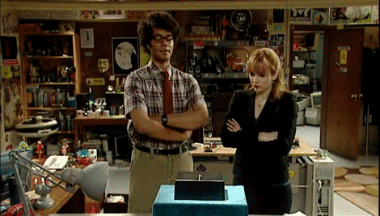
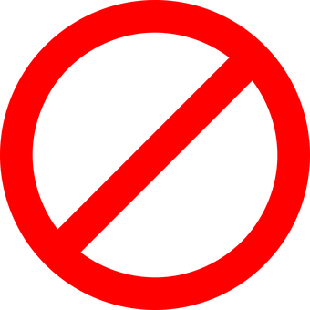

Дмитрий Онищенко
Frontend develope в компании Zeo Alliance
Более 7 лет занимаюсь разработкой и изучаю веб технологии
Контакты:
telegram: +380636126197
email: donischenko801@gmail.com
План урока
- Что такое Интернет
- Как интернет работает
- Как передаются данные
- Передача данных при помощи интернет
- Поиск устройства
- Что такое DNS
- Протокол HTTP
- URL, URN, URI
- Практика, Rest API
Что такое Интернет?

"This, Jen, is The Internet"
Что такое Интернет?


Что такое Интернет?

Как передаются данные?

Когда нужно связать между собой два компьютера, вы должны связать их в сеть либо проводным обычно с помощью Ethernet кабеля, либо беспроводным способом например, с помощью WiFi или Bluetooth.
Как передаются данные?

Что будет если их будет больше?
Например для 10 компьютеров, вам понадобится 45 кабелей и 9 сетевых плат в каждом компьютере.
Как передаются данные?

Для таких вещей нам пригодиться маршрутизатор.
Как передаются данные?

Можем так же соединить друг с другом два маршрутизатора.
Как передаются данные?

Подключая компьютеры к маршрутизатору, а затем маршрутизатор к другому маршрутизатору, мы можем увеличивать нашу сеть до сколь угодно больших размеров.
Как передаются данные?

Следующий шаг — передать сообщение из нашей сети в сеть, с которой мы хотим связаться. Чтобы сделать это, мы должны подключить нашу сеть к провайдеру услуг интернета ISP (Internet Service Provider).
Таким образом, наше сообщение, пройдя транзитом через сеть нескольких провайдеров, достигнет сеть назначения.
Передача данных
Данные передаются в виде пакетов. Сначала даннные разбиваются и на компьюторе адресатора восстонавливаются
IP-пакеты состоят из заголовка и полезной нагрузки.
Поиск устройства
Для того что б можно было обратится к устройству он должен иметь адресс
Поиск устройства
Основные понятия при адресации
- IP (Internet Protocol Address) - уникальный адрес в сети, необходимый для нахождения, передачи и получения информации от одного компьютера (узла) к другому.
- MAC-address (Media Access Control) - это физический адрес сетевого устройства жестко с ним связанный.
- DNS (Domain Name System) - Система доменных имён. Компьютерная распределённая система для получения информации о доменах.
Подробнее про DNS

Протокол HTTP
HTTP (HyperText Transfer Protocol) - Этот протокол описывает взаимодействие между двумя компьютерами (клиентом и сервером), построенное на базе сообщений, называемых запрос (Request) и ответ (Response).

Как работает HTTP соединение
Запрос происходит в несколько этапов:
- Очередь
- DNS-запрос — поиск ближайшего DNS-сервера
- Отправка данных (Request)
- Ожидание ответа (TTFB)
- Получение данных. (Response)

Инструменты для анализа производительности
Пример запроса
GET /index.php HTTP/1.1
Host: example.com
User-Agent: Mozilla/5.0 (Windows NT 10.0; Win64; x64)
Accept: text/html
Accept-Language: en-us,en;q=0.5
Connection: close
Пример ответа
HTTP/1.x 200 OK
Server: nginx/0.6.31
Content-Language: ru
Content-Type: text/html; charset=utf-8
Content-Length: 1234
Connection: close
{
"status": "ok",
"results": [
{"value": 1.0e+3, "type": "decimal"}
]
}
Подробнее про заголовки
Список кодов состояния HTTP
- 1xx: Informational (информационные)
- 2xx: Success (успешно)
- 3xx: Redirection (перенаправление)
- 4xx: Client Error (ошибка клиента)
- 5xx: Server Error (ошибка сервера)
Методы HTTP
Метод указывает какая операция будет производится над ресурсом.
В спецификации HTTP 1.1 определены следующие методы:
OPTIONS, GET HEAD POST PUT PATCH DELETE TRACE LINK UNLINK.
HTTP методы составляют основную часть "единого интерфейса", ограничивающего и предоставляющего возможность осуществлять действия над существительным-ресурсом.
Подробнее о методах
Структура HTTP запроса?
Cообщение состоит из трех частей.
- Строка запроса* — метод запроса (HTTP-метод), URI, версия протокола
- Заголовки — набор пар имя-значение. В заголовках передается различная служебная информация (Список заголовков)
- Тело сообщения — данные сообщения
Основные HTTP методы
Метод GET — используется для запроса содержимого указанного ресурса. Это с его помощью браузер получает HTML код конкретной страницы и все ее объекты (изображения, CSS и т.п)
Метод POST — предназначен для передачи данных на сервер. Тело такого запроса обычно содержит данные. Сообщение ответа сервера на выполнение метода POST не кэшируется
Метод HEAD — Аналогичен GET. Запрашивает только информацию заголовка о файле или ресурсе
Подробнее о простых запросах
Основные HTTP методы
Метод PUT — служит для обновления ресурса. Тело запроса при отправке PUT-запроса к существующему ресурсу URI должно содержать обновленные данные оригинального ресурса
Meтод DELETE — используется для удаления ресурса, идентифицированного конкретным URI (ID)
Meтод PATCH — Аналогично PUT, но применяется только к фрагменту ресурса.
Meтод TRACE — Возвращает полученный запрос так, что клиент может увидеть, какую информацию промежуточные серверы добавляют или изменяют в запросе.
Meтод CONNECT — Преобразует соединение запроса в прозрачный TCP/IP-туннель, обычно чтобы содействовать установлению защищённого SSL-соединения через нешифрованный прокси.
Идентефикация ресурса
- URI (Uniform Resource Identifier) - единообразный идентификатор ресурса.
- URN (Uniform Resource Name) - единообразное имя ресурса
- URL (Uniform Resource Locator) - eдинообразный локатор (определитель местонахождения) ресурса

Структура URL

Rest API
REST (Representational state transfer) - Названия группы принципов построения веб-приложений.
Предлагает отказаться от использования одинаковых URI для разных ресурсов (то есть адреса двух разных статей вроде /index.php?article_id=10 и /index.php?article_id=20) и использовать разные HTTP-методы для разных действий

Но есть небольшая проблема с применением REST на практике. Проблема называется HTML.